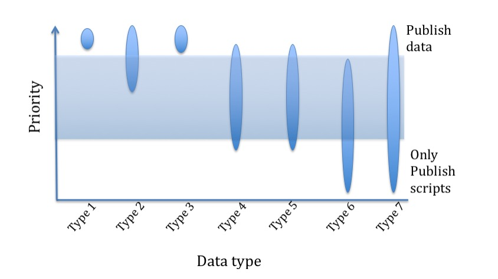

ARC Centre of Excellence for Climate Extremes: Data strategies
ARC Centre of Excellence for Climate Extremes: Data strategies#
26th of March, 2021
The ARC Centre of Excellence for Climate Extremes (CLEX) is publicly funded. We therefore recognize the expectation that we will publish our data in ways that exceed the requirements of journal publishers, the Australian Research Council and Government. This document aims to establish what we mean by “publish our data”; the capacity to publish all data we create does not exist. We will define seven types of data that would be generated in Climate Extremes science and associate these with a data publishing strategy and priority.
While much of this document focusses on the responsibility of a researcher to make their data freely available, we note that by “publishing” (either the data, or the codes to process the data) a contribution is made by the researcher.
This contribution needs to be recorded and acknowledged. The process of obtaining a doi means that the data set can be recorded on the researchers’ CV as a “publication” and can be cited and win citations. The publication of some codes can also generate useful metrics to a researcher that can be recorded on a CV. There are also awards now for researchers who publish data. In short, care and attention to the publishing of data and code can have very significant personal benefits to a researcher.
Climate Extremes science generates multiple forms of data. Raw data from models or instrumentation can be massive (Petabytes). It is common to reduce these data by sampling, statistical approaches (eg averaging etc) to create processed data that is stored for the longer term. These data would again be post-processed in the development of manuscripts in the creation of understanding as well as figures and tables. This document discusses these kinds of data with a focus towards those data that should be published as distinct from stored.
Type 1. Data that cannot be re-created
This would include observations from satellites, ships, airplanes, flux stations etc. CLEX rarely collects primary data. Where we do it is essential that these data be archived and published. We would aim to publish these data through an existing portal such as those hosted by TERM, IMOS etc, or via international data archives. We note that Type 1 data does not include simulation data. All Type 1 data should preferably be published, and in Figure 1 all data of this type are above the threshold requiring publication.
Type 2. Data that is expensive to recreate
Fully coupled climate models, high resolution ocean models and high resolution atmosphere models can take many months to complete simulations on existing supercomputers. Re-creating these data is therefore expensive in computational resources and in terms of human resources. Where these data are of value to a community they should be published with associated metadata.
These data may be of broad interest and should be published openly or may be discipline specific and published to just the specific community. The associated metadata should be sufficiently detailed that the data could be recreated by re-running a model if the need arose.
There is no a priori way to define what data is too expensive to recreate relative to cheaper to recreate relative to storing and publishing. However, simulations with a 0.1oocean model, or ensembles of a coupled climate model are examples of data that is likely too expensive to recreate and should therefore be published if they are of community interest. However, there will be cases where the data is extremely expensive to recreate but it is still cheaper than publishing it hence in Figure 1 Type 2 data are sometimes above and sometimes below the threshold.
Type 3. Data generated for a community
Where simulations are conducted explicitly for a community, these data should be published. Examples might include simulations conducted as part of a national or international project such as CMIP6, CORDEX or climate indexes.
Thus Figure 1 shows these data above the threshold. Note, however, that all the data generated by running a model might not be published – it may well be that a sub-sampling is required, with the expectation that a model would be re-run to re-create additional data if required. Thus, the associated metadata should be sufficiently detailed that data not published could be recreated by re-running a model if the need arose.
Type 4. Synthesized or sampled data that can be easily re-generated
It is common in Climate Extremes science to average or sample over complex data sets. This can be extremely expensive and technically challenging and the resulting data set can be of considerable value to others in the same community.
Some of these data types should be published – where the data can be published more easily than they can be re-created. Alternatively, some of these data should not be published where the costs of publication exceed the cost of re-creating as required. In all cases the scripts or tools used to generate the synthesized or sampled data should be published.
Overall, Type 4 data is a case-by-case problem with a spectrum from publication of the data, through to the publications of the tools used to create the data only. Figure 1 therefore shows Type 4 data as a widely ranging priority.
Type 5. Data that can be easily recreated
These data should not commonly be published, but the scripts that enable the data to be created should be available via a Git-type system. However, as with Type 4 there are a wide range of possibilities and circumstances that lead to data in this class being a wide range of possible priorities.
Type 6. Data that is preliminary
It is common in Climate Extremes science to run simulations to examine a configuration, examine the impact of a setting etc. These can be very large, but are by their nature preliminary data, which will be recreated once a model configuration is agreed. These preliminary data should be saved while the experiment is being developed and run but would not be published. A wiki or similar record of what was done and what was found is a useful contribution to avoid others repeating the same experiments where feasible. Figure 1 therefore shows these data types as not reaching the threshold for publication.
Type 7. Data underpinning publications
There is a hierarchy of these kinds of data and most can be defined within Types 1 through 5. However, in almost all Climate Extremes science the raw climate data is averaged or sampled over time, or space, or levels or ensembles before analysis takes place, or only a sub-set of variables are used to generate the publication. These data are then commonly synthesized a second time to generate the specific figures or tables that are used in a paper.
An individual researcher may not own the raw climate simulation data (e.g. CORDEX, CMIP6 etc) and cannot re-publish these data. They may own the first order synthesized data, but if they publish their scripts then these data should be easily recreated by a third party. The step of generating specific figures or tables in a paper can be trivial or require sophisticated scripts and algorithms. Some journals now require these to be published and that is something we also encourage.
Figure 1 therefore shows these data types as ranging from high priority for data publication, through to very low priorities where the scripts and ancillary data only need to be published. A researcher may therefore produce a world-significant discovery but not publish any data. They would, however, publish the tools and ancillary data to enable another researcher to reproduce their results.
Type 8. Data constrained by license
Commonly, Climate Extremes science uses satellite and observational data provided to a researcher under license. This license prohibits the publication of these data. Unless written agreement can be obtained by the license holder, data of this kind cannot be published. Data derived from these data may be published depending on the terms of the license.
Alternatives to publishing data
While the ARC strongly encourages publications of data, in sciences that work on petascale data this can be beyond the capacity of an institution to provide the capacity on an on-going basis of an accessible, secure and public facility.
Rather than attempt to publish petascale data it can be more useful and cheaper to publish the computer codes, ancillary data and scripts that were used to generate the petascale data. This is substantially true of data types 4, 5 and 6. In these cases, it is likely good practice and entirely legitimate not to attempt to publish the data, but rather include in publications a specific link to a code repository containing the specific version of software and ancillary data that can be used to recreate the data.
{kind=link}
Figure 1 Illustration of the prioritization of different data types. High priority data should be published. Low priority data is published via the scripts, model codes etc. Only data Types 1 and 3 will always require publication. Type 2 depends on the cost of publication (i.e storage) relative to cost of re-creating the data. Types 4, 5, 6 and 7 may be published as data, or via the tools used to create the data. This is a judgment based on the relative value to the community, the cost of publishing the data relative to the cost of recreating it.
It is implicit here that the systems exist to enable a researcher to re-create data from tools and ancillary data published. This is not a trivial requirement and CLEX is working towards establishing systems that enable this. Ultimately this provides very large long-term efficiencies and flexibilities for the community.
This is an updated version of the ARCCSS Data Strategy document first released on the 21st of January 2014 A file version of this document is available here for download